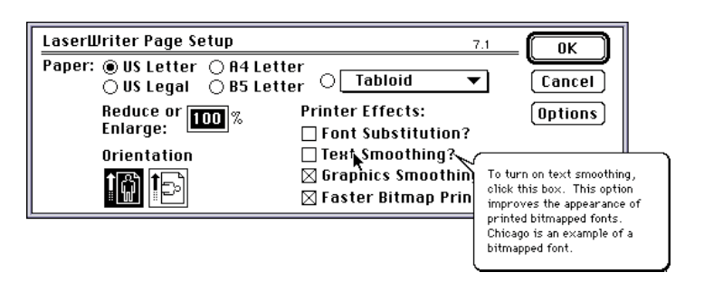
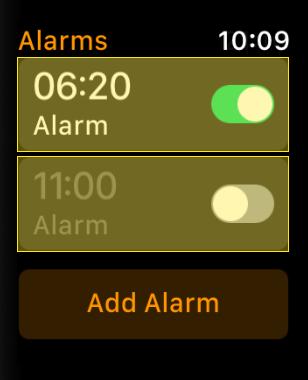

In Windows 10, a check box is used to record a single binary choice or to select multiple options from a list.
Guidelines
Windows 10 follows the below guidelines outlined by the most recent Windows developer guidelines found here.
These guidelines include, but are not limited to:
- Check box text is on two lines or less.
- The label must be worded as a statement that the checkmark designates as true.
- Don’t put two check box groups next to each other without a clear label to separate them.
- If there are mutually exclusive statements in a check box list, use radio buttons instead.
- Checkboxes should not be used to perform or control a command, use a toggle instead.
- Checking a box should not cause a display or control to be displayed.
- The indeterminate state should be used when the user is able to see the sub-choices.
Examples of Check Box Use
Although the choice is said to be binary, Windows 10 actually allows for a checkbox to be in three (not two) states: selected, unselected, and indeterminate. Indeterminate is used when the choice is composed of both selected and unselected sub-choices. The indeterminate checkbox is very rarely used, likely because it is confusing for the user. For example, A check box in the indeterminate state is shown in the screen shot to the right. The checkbox is filled with a square. If the user clicks on the square, the square disapears. If the user clicks on the box again, a checkmark appears, and if the user clicks a third time, the box reappears.
Checkboxes are commonly used to mark a statement as either true or false, and in cases where the indeterminate is allowed, a naive user is unsure of what they are marking the statement as when indeterminate is an option. This example of the indeterminate seems to violate the Microsoft guidelines above because the sub-choices are not visible.
Microsoft defines the appropriate time to use a check box for a yes/no choice instead of a toggle as when the check box designates a status rather than causing an immediate action.
The screenshot to the right shows a single check box being used in Windows 10. When the box is checked, a status is saved but there is no immediate action. The action instead happens when the form is submitted by clicking a button at the bottom of the window.
Other examples include agreeing to a terms of service agreement and a “Remember me?” box when logging in.
Another difference between toggles and check boxes is that only check boxes are used for multi-selection. The choices cannot be mutually exclusive (in that scenario, a radio button would be appropriate).
The below screenshot shows multiple checkboxes being used in Windows 10. The checkboxes allow the user to select which days the alarm will repeat on. The days of the week are selected with checkboxes, but to turn the alarm itself on or off, a toggle is used.
Multiple checkboxes can also be used when selecting folders or files in the file explorer. This allows the user to designate files and folders to do some other action to. The check marks them as selected, and then the user is able to perform actions such as move, delete and copy to all of the selected items at once.
This version of the Mac operating system debuted in October of 2015, but kept many of the stylistic design choices that came out with Mac OS X 10.9 Mavericks. One of the big changes came with the addition to the Notes app that allows users to turn a list into a checklist, which makes use of the check box component.
Mac OS X Design Principles
Mental Model
"A mental model is the concept of an object or experience that people carry in their heads."
Apple believes that it is important to acknowledge the mental models that people bring with them, since those models influence their expectations.
In the case of the check box component, many users' mental models are inspired by the fact that people use checklists in their daily lives, and are therefore familiar with what the check box represents and what it means for a check box to be enabled.

The screenshot above illustrates how Mac OS X El Capitan takes advantage of this mental model that many users have. Many users use notepads to keep track of to-do lists, and so the new Notes application makes it easy for one to convert a list into a checklist. Note that the check box icons are designed in a way that makes it easy for one to tell which ones are enabled.
Explicit & Implied Actions
According to Apple, a typical action involves three steps:
- Identify an object onscreen
- Select or designate the object
- Perform an action, either by invoking a command or by direct manipulation of the object
These steps lead to the two "paradigms for manipulating objects: explicit actions and implied actions."
For check boxes, the explicit action paradigm applies, since one of the key characteristics of a check box is that a label is supplied with the check box, which explicitly tells the user why the check box is being used.

The screenshot above highlights the use of a clearly described check box. In Mac OS X, the check box is most commonly seen in the preference panes of applications, probably due to the customizable nature of a preference panel. In addition, one can see that this label does not confuse the reader, making it clear that a checked box will cause the operating system to "automatically hide and show the menu bar."
User Control
This principle presumes that the user should initiate and control actions. However, Apple admits this can be challenging for the following reasons:
- The ideal user experience lies somewhere between expecting users to provide instructions for every step of every action and preventing users from initiating any but the most basic actions
- The right amount of user control depends on the sophistication of the user audience

The screenshot shown here illustrates an example where check boxes are disabled, thus taking the control away from the user. In this case, this was done as a matter of security, since the user must first "unlock" the panel by inputting his/her account information.
Consistency
Obviously, consistency is one of the most important principles, especially when thinking about the usability metrics of memorability, efficiency, and errors. Apple also believes that consistency in the interface "allows users to transfer their knowledge and skills from one app to another."
This does not mean that each application needs to looks and behave just as every other application does. Instead, an application should "respect its users and avoid forcing them to learn new ways to do things for no reason than to be different."

The image above is taken from a preferences panel in the Mail application. Note that the check boxes for the past three "settings-based" examples have used the same check box component. This makes it easy for a user to recognize that a check box will have the same behavior throughout the operating system. Next one will see how this does principle does not always apply when the concept of aesthetic integrity comes into play.
Aesthetic Integrity
Apart from consistency, one must also be thinking about how the "visual and behavioral design of an app is consistent with the content and tasks it presents." This means that the check box does not always need to be that classic blue check box when it does not flow with the application's purpose.

The image above showcases this principle, as the reminders app is meant for seeing what has been done, not what is selected.
About "System 7" or Mac OS 7.0.1
System 7 was introduced by Apple Computer on May 13, 1995. Preceeding System 6, the original OS system, Mac OS 7 was a major player in creating pritine user interfaces. Transitioning between System 6 and 7, a few additional features were added:
such as built-in co-operative multitasking, personal file sharing, drag and drop, and an improved user interface.
Definition
According to the Macintosh Human Interface Guidelines, published in 1995, a checkbox is defined as:
"A standard Macintosh control that displays a setting, either checked (on) or unchecked (off).
Clicking a checkbox or its text label reverses its setting. One or more checkboxes can be checked."
As seen in the figure below, checkboxes are typically seen as squares and radio boxes are typically seen circular.
Labels
- Every checkbox needs a label that clearly designates two opposing states.
- If a label does not imply opposing states, use radio boxes.
- Labels for checkboxes allow users to understand the signficance of options.
- Labels must use book title capitalization style, i.e capitalize every word except articles, coordinating words and prepositions.
- Labels must be as specific as possible, but also concise and clear.
- In the dialog section below indicates a concise, but clear check box.
- Users must be able to click the box and/or label text.
Dialog Boxes
- Dialog boxes include checkboxes with options
- Often phrases will introduce a set of options
- If phrase is preceeeding options no colon should be used
- See example below:
- All changes that a user enters in a dialog box should appear to take effect immediately whenever possible
- This is similar to the screenshot to the right which indicates once "Read-Only" is checked the document can only be read not editted.
- Immediate action is necessary to make it clear to the user which input goes into effect.
Within Menus, checkmarks are used to indicate which item is selected for a particular section. Menus contain two types of groups: exclusive versus nonexclusive attribute groups.
In a mutually exclusive attribute group one item is affected at a time. However, in an accumulating (nonexclusive) attribute group, multiple attributes can be in effect at the same time.
An example of this nonexclusive group in action is seen in dialog boxes, represented by checkboxes, as seen to the right. This checkbox contains the label: Read-Only. As mentioned earlier by the guidelines, this allows the user to clearly see an opposite state.
In this case, when the option is off, the user can read and write (or make changes to) a file.
Balloon Help
Help balloons give the user a look at the current state of the system by the way they phrase the sentences. For example, in the picture to the right the help ballon states: "To turn on text soothing, click this box." Currently, text soothing is not being used, but if the help balloon said: “To turn off text smoothing, click this box,” it would indicate text soothing is being used.
Utilizing this simple, but effective help balloon allows users to make a mental note of how their action of "clicking the box" affects their next steps. As mentioned earlier, this is correctly labeling your checkbox for users to "understand the significance of options."
Help balloons are also needed when explaining unavailable checkboxes. This means describing what the box does when it’s selected and then why it is unavailable, similar to the unavailibility of a radio button.
The figure bellow indicates an unavailable explaination; however, it is not a checkbox, it is just an example.

Many different variants and different designs of check boxes are used in iOS. The original check box is utilized in applictions like Mail, Messages, and Reminders. The radio button appears in setting options such as wifi, ringtone selection, and many more. Of all variants, the switch is the most popular in iOS. Applications like Clock and Settings make frequent use of the component.
Below are two examples of check boxes in Mail. Notice in the first example, when no emails are selected the Move and Trash buttons help indicate the status of the check boxes. Notice in the second example, the Mail application uses the color alteration and the original symbol to show selection. Here the component is used to indicate selection of individual emails so that an action can be applied to multiple at a time.


The following example emphasizes the different aesthetic design styles of iOS. The check boxes in the Reminders application stand out from other platforms with their lack of a check symbol and color specification. Although there is differentiation, because the unchecked state is indicated by the empty circle the application does attempt to stay consistent with other applications.

Next are the examples of radio buttons, indicated by small blue check marks. Depending on which choice is selected, the blue check mark will disappear off the previous option and appear on the most recent selection.

Finally are the examples of switches. Most clearly exemplified in the Clock application. The switches act as a clear indication of whether an alarm with be set, or off. Since left and right positions of the switch do not have a global state meaning, the grey and green colors provide the greatest distinguishing factor between on and off states.

Many different variants and different designs of check boxes are used in iOS. The original check box is utilized in applictions like Mail, Messages, and Reminders. The radio button appears in setting options such as wifi, ringtone selection, and many more. Of all variants, the switch is the most popular in iOS. Applications like Clock and Settings make frequent use of the component.
Below are two examples of check boxes in Mail. Notice in the first example, when no emails are selected the Move and Trash buttons help indicate the status of the check boxes. Notice in the second example, the Mail application uses the color alteration and the original symbol to show selection. Here the component is used to indicate selection of individual emails so that an action can be applied to multiple at a time.
The following example emphasizes the different aesthetic design styles of iOS. The check boxes in the Reminders application stand out from other platforms with their lack of a check symbol and color specification. Although there is differentiation, because the unchecked state is indicated by the empty circle the application does attempt to stay consistent with other applications.
Next are the examples of radio buttons, indicated by small blue check marks. Depending on which choice is selected, the blue check mark will disappear off the previous option and appear on the most recent selection.
Finally are the examples of switches. Most clearly exemplified in the Clock application. The switches act as a clear indication of whether an alarm with be set, or off. Since left and right positions of the switch do not have a global state meaning, the grey and green colors provide the greatest distinguishing factor between on and off states.


 This gif of a switch represents ON and OFF states by changing color.
This gif of a switch represents ON and OFF states by changing color.